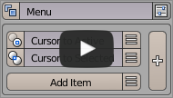
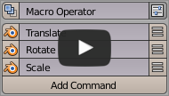
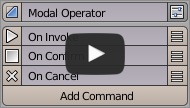
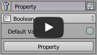

機能概要¶
Menus & Dialogs¶
必要な操作を、呼び出しやすく整理します。

Pie Menu Editor
頻繁に使う操作を円形メニューにまとめます。メニューやパネルの入れ子にも対応します。

Regular Menu Editor
ドロップダウンメニューを作成します。ホットキー呼び出しや既存メニューへの追加に向いています。

Pop-up Dialog Editor
ウィジェットレイアウトを作成します。メニュー、ダイアログ、パネル、ツールバーに表示できます。
Floating Panel Editor
作業中に開いたまま使えるフローティングパネルを作成します。Pop-up Dialog と同じスロット構造を共有するベータ機能です。
Keys & Shortcuts¶
少ないキーで、より多くの操作を扱えるようにします。

Sticky Key Editor
キーを押した時と離した時で別の動作を設定します。一時ツールやモード切り替えに向いています。

Stack Key Editor
1 つのホットキーに複数のコマンドを割り当て、押すたびに順番に切り替えます。
Operators & Automation¶
繰り返し操作を、素早く再利用できる形にします。

Macro Operator Editor
既存オペレーターを組み合わせて新しい操作を作成します。定型作業の自動化に向いています。

Modal Operator Editor
実行中のキー入力やマウス操作で値を調整する、対話型のオペレーターを作成します。
Interface & Properties¶
Blender の UI とデータを、扱いやすく整理します。

Menu/Panel Extension
既存の Blender メニューやパネルに、自分のメニューを差し込めます。表示位置や順序も調整できます。

Property Editor
独自プロパティを定義できます。Getter / Setter を持たせて Blender の任意のデータブロックへ登録できます。
Side Panel Editor
サイドパネルのタブやパネル構成を整理します。独自カテゴリの追加や既存 UI の拡張に使えます。

Hiding Unused Panels
不要なパネルやグループを非表示にして、作業画面をすっきり保てます。